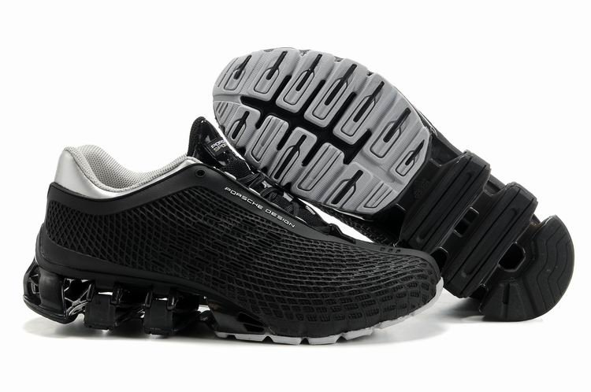
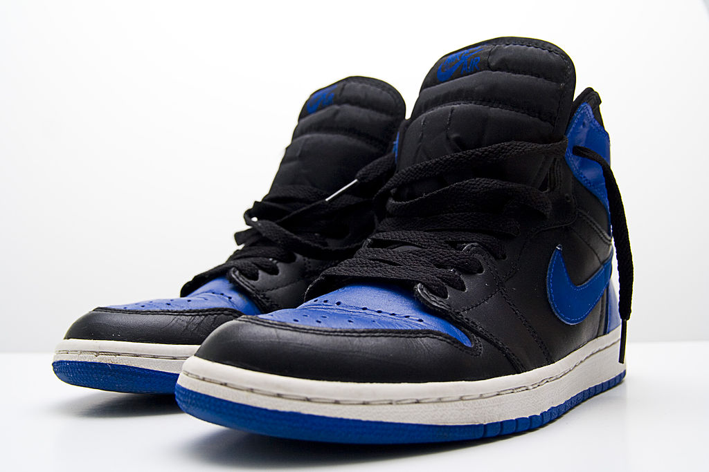

История кросовок
В конце XVIII столетия люди носили обувь с каучуковой подошвой, которые назывались парусиновыми туфлями, но они были довольно грубыми и примитивными, не было разделения на правую/левую ногу.1895 — Джозеф Уильям Фостер (Болтон, Англия) изготовил первую шипованную обувь. Приблизительно в 1892 году Американская Резиновая Компания придумала более удобную резиновую обувь с верхом из ткани, которая получила название «кеды» («keds»). К 1917 году эта обувь поступила в массовое производство (она получила название «сникеры», потому что человек, носящий их, шёл так тихо, что мог подкрасться к кому угодно).

В 1920 году в Германии немецкие предприниматели Адольф и Рудольф Дасслеры организовали фабрику по производству обуви для тренировок спортсменов-бегунов.
В 1930-х и 1940-х годах обувные компании начали производить специальную обувь для каждого вида спорта отдельно. Первые кроссовки для тенниса появились во Франции и были произведены фирмой Spring Court.
В 1950-х годах в США в связи с демографическим ростом возросла популярность кроссовок как легкой и практичной обуви. В то время кроссовки были не очень дороги по сравнению с классической кожаной обувью. В течение первой половины XX века спортивную обувь носили главным образом для занятий спортом. Но в пятидесятых годах дети начали носить их, следуя за модой, после выхода популярного фильма «Бунтарь без идеала» (англ. «Rebel Without a Cause») с Джеймсом Дином в главной роли.
В 1957 году производители классической обуви из кожи решили бороться с оттоком клиентов, поэтому появилось первое заявление, что кроссовки очень вредны для детей и способствуют у них развитию дистрофии стопы. Но это не стало преградой, и кроссовки всё также оставались популярными.
В начале 1960-х годов часть кроссовок ввозилась на рынок США из Японии. Компания Nike в то время заключила контракт с Onitsuka Tiger и занималась импортом японской обуви под собственным названием Blue Ribbon Sports.
В 1970-х в США стал популярным бег трусцой, что позволило американским фирмам предложить кроссовки для новичков в спорте. Кроме того, люди начали носить кроссовки как повседневную обувь. Впервые появились кроссовки, созданные для повседневного использования. Многие известные личности стали надевать кроссовки на различные мероприятия. Вуди Аллен носил кроссовки в театре и балете, музыканты группы Led Zeppelin носили кроссовки во время съемок документального фильма, Дастин Хоффманн, играя в фильме роль репортера Карла Бернштайна, также использовал кроссовки.
В 1990-х многие обувные компании всего мира переключились на производство кроссовок. В это время ведущим брендами обуви индустрии кроссовок стали такие марки как Adidas, Anta, ASICS, BATA, Converse, DC Shoes, Dunlop, Fila, Gola, Globe, Heelys, Jordans, K-Swiss, Keds, Keen, Lacoste, Li Ning, Lonsdale, Mizuno, New Balance, Nike, PF Flyers, Puma, Reebok, Saucony, Skechers, Slazenger, Sperry Top-Sider, Starbury, UK Gear, Vans.